Empire Stone × Empire Granite — QA
Test Cases: E2E Flow — Mode 5 (Stone Production / FG Production)
เรื่องราวเดียวต่อเนื่องกันตั้งแต่เพิ่มบรรทัดสินค้าสำเร็จรูป (FG) ยืนยันคำสั่งขาย แตกเป็น 2 เส้นทางจริงตามสภาพสต็อก (มีของพอ vs. ต้องผลิตใหม่) ย้าย Slab เข้าสถานีผลิต เปิด wizard "Produce FG" ตัด/ผลิตจริง ส่งมอบสินค้า จนถึงออกใบแจ้งหนี้และตรวจรายการบัญชี — ไม่ใช่การเทสฟีเจอร์แยกส่วน และไม่มีข้อไหนเป็นการดักฟิลด์บังคับ/error ทั่วไป เดินตามได้เองแม้ไม่ใช่ technical user ตัวเลข "ตัวอย่างจริง" มาจากการรันจริงที่ทำขึ้นเฉพาะสำหรับเอกสารนี้ ไม่ใช่ตัวเลขสมมติ — รวมถึง 1 ฟีเจอร์ที่เพิ่งแก้ไขจริงระหว่างทาง (ดูกล่องสีเขียวใน TC-03) และ 1 เรื่องที่ตอนแรกดูเหมือนบั๊กบัญชีแต่ตรวจสอบลึกแล้วไม่ใช่ (ดูหมายเหตุใน TC-12)
12Test Case ทั้งหมด
5หมวด
9High Priority
3Medium Priority
0Low Priority
G1. ขาย (Sale — Mode 5, FG Production)
ADR-029 — เพิ่มบรรทัดสินค้าสำเร็จรูป (FG) แล้วยืนยันคำสั่งขาย · 2 test cases
| TC ID | Scenario | Precondition | Steps | ข้อมูลตัวอย่าง | Expected Result | Priority | ภาพหน้าจอ |
|---|---|---|---|---|---|---|---|
| TC-E2E-M5-01 | เพิ่มบรรทัดสินค้าสำเร็จรูป (FG) ในใบสั่งขาย | มี Slab (วัตถุดิบตั้งต้นของ FG นี้) อยู่ในสต็อกที่ไหนสักแห่งแล้ว (ไม่จำเป็นต้องว่าง — ระบบจะเช็คให้เองตอน Confirm) |
|
ลูกค้า = "ทดสอบ E2E - Test Customer" สินค้า = "Carrara White - Countertop" จำนวน = 3 |
เพิ่มบรรทัดสำเร็จ ราคาต่อหน่วยขึ้นตามราคาตั้งต้นของสินค้า — ตัวอย่างจริง: 15,000.00 บาท/หน่วย × 3 = 45,000.00 + VAT 7% = 48,150.00 บาท | High | 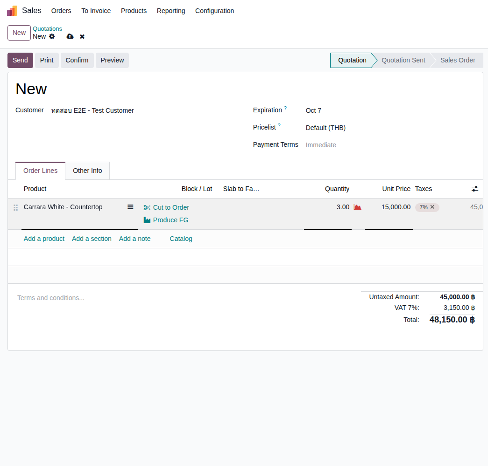 |
| TC-E2E-M5-02 | ยืนยัน (Confirm) Sale Order | ทำ TC-E2E-M5-01 เสร็จแล้ว |
|
- | SO เปลี่ยนสถานะเป็น Sales Order เกิด Delivery Order อัตโนมัติ 1 ใบ — ถ้า FG ที่ขายมีสต็อกว่างพอ บรรทัดจะไม่มีปุ่ม "Produce FG" เลย (ไปต่อที่ G2a) แต่ถ้าไม่พอ ปุ่ม "Cut to Order"/"Produce FG" จะปรากฏให้กดต่อ (ไปต่อที่ G2b) — ตัวอย่างจริง (กรณีสต็อกไม่พอ): S00112 ยอดรวม 48,150.00 บาท, ปุ่ม Produce FG ปรากฏที่บรรทัด | High | 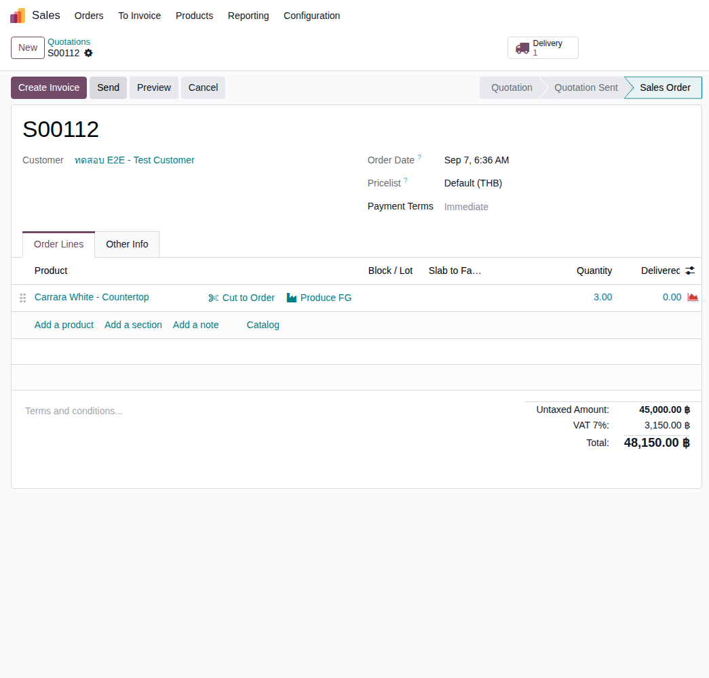 |
G2a. ผลิต — กรณี FG มีสต็อกพอแล้ว (ไม่ต้องผลิตซ้ำ)
ระบบเช็คสต็อกว่างของ FG เองก่อนเสมอ — เพิ่งแก้ไขให้ถูกต้อง 2026-09-07 · 1 test case
| TC ID | Scenario | Precondition | Steps | ข้อมูลตัวอย่าง | Expected Result | Priority | ภาพหน้าจอ |
|---|---|---|---|---|---|---|---|
| TC-E2E-M5-03 | ระบบข้ามขั้นตอนผลิต เมื่อ FG มีสต็อกว่างพออยู่แล้ว ✅ เพิ่งแก้ไข 2026-09-07: ก่อนหน้านี้ระบบไม่เคยเช็คสต็อกของ FG เอง จะขึ้นเตือนให้ผลิตซ้ำทุกครั้งแม้มี FG เหลือพอขายอยู่แล้ว — ตอนนี้เช็คให้อัตโนมัติแล้วจากสต็อก "ว่างจริง" ที่ไม่ถูกจองไปกับออเดอร์อื่น |
สินค้า FG ตัวนี้มีสต็อกว่าง (ไม่ถูกจองไปกับออเดอร์อื่น) พอกับจำนวนที่จะขาย |
|
สินค้า = "Carrara White - Countertop" จำนวน = 2 (ตอนนั้นมีสต็อกว่างเหลือ 4 หน่วยจากการผลิตเผื่อไว้ใน G2b) | บรรทัดไม่มีปุ่ม "Produce FG" ปรากฏเลย (ต่างจาก TC-E2E-M5-02) และไม่ขึ้นแถวในหน้า Factory Worklist เลย — ไปต่อที่การจัดส่งได้ทันทีโดยไม่ต้องผลิตอะไรเพิ่ม — ตัวอย่างจริง: S00113 ยอดรวม 32,100.00 บาท | High | 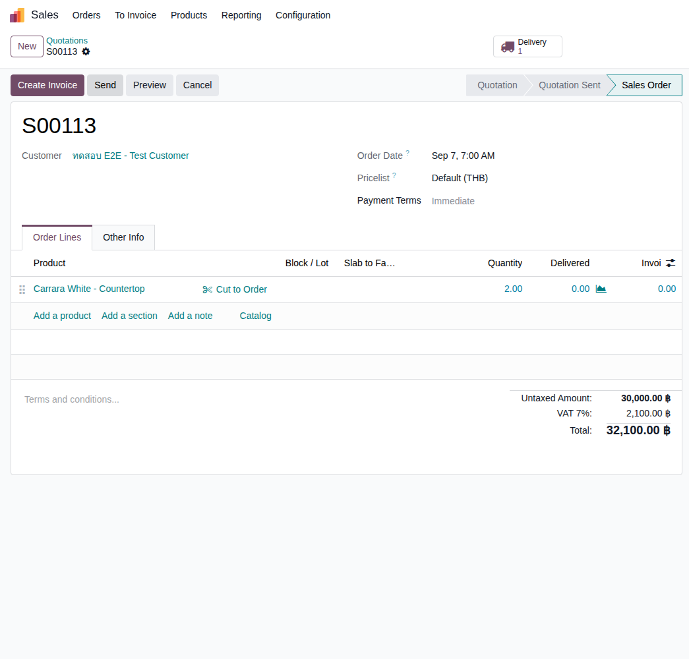 |
G2b. ผลิต — กรณี FG ไม่มี/ไม่พอในสต็อก (ต้องผลิตจริง)
ย้าย Slab เข้าสถานีผลิต แล้วเปิด wizard "Produce FG" ตัด/ผลิตจริง · 5 test cases
| TC ID | Scenario | Precondition | Steps | ข้อมูลตัวอย่าง | Expected Result | Priority | ภาพหน้าจอ |
|---|---|---|---|---|---|---|---|
| TC-E2E-M5-04 | เห็นคิวงานที่หน้า Factory Worklist | ทำ TC-E2E-M5-02 เสร็จแล้ว (กรณีสต็อกไม่พอ) |
|
- | เห็นแถวของ SO นี้ขึ้นคิวงาน คอลัมน์ "ต้องทำ" ระบุ "รอผลิต FG (Cut to Order / Produce FG)" — ตัวอย่างจริง: S00112, สินค้า Carrara White - Countertop, จำนวน 3.00 | Medium | 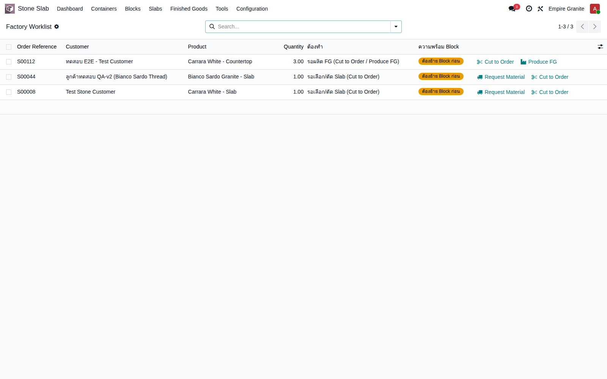 |
| TC-E2E-M5-05 | ย้าย Slab (วัตถุดิบของ FG) เข้าสถานีผลิต | มี Slab ของ Material เดียวกับ FG นี้ อยู่ที่ Location "Stone Available" |
|
สินค้า = "Carrara White - Slab" จำนวน = 1 | ใบโอนย้ายเปลี่ยนสถานะเป็น Done Slab ถูกย้ายเข้า Stone Production เรียบร้อย พร้อมให้ผลิตต่อ — ตัวอย่างจริง: EG01/INT/00053 (Slab BDL-00002 #8) | High | 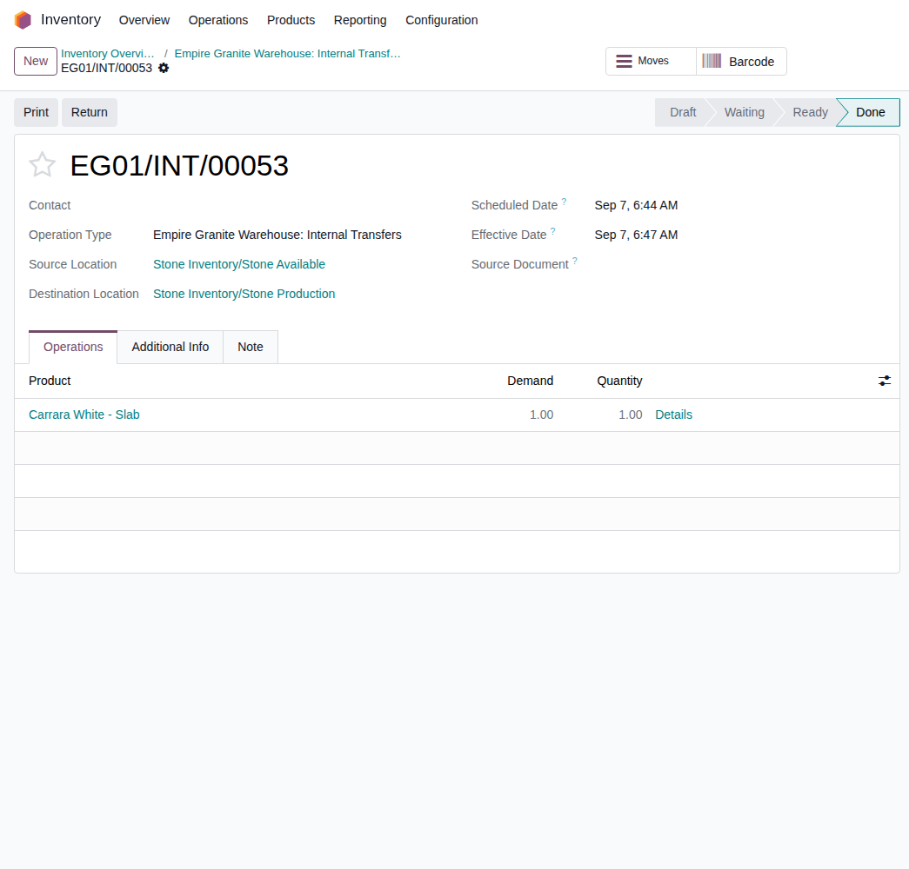 |
| TC-E2E-M5-06 | เปิด wizard "Produce FG" — ระบบจับคู่ Slab ให้อัตโนมัติ | ทำ TC-E2E-M5-05 เสร็จแล้ว |
|
- | หน้าต่าง Produce FG เปิดขึ้น ช่อง "Slab to Consume" ถูกเติมชื่อ Slab ที่เพิ่งย้ายเข้าสถานีผลิตให้อัตโนมัติ (ไม่ต้องเลือกเอง) พร้อมบรรทัดผลผลิต 1 บรรทัดตรงกับสินค้าที่ขายอยู่แล้ว — ตัวอย่างจริง: Slab to Consume = BDL-00002 #8 | High | 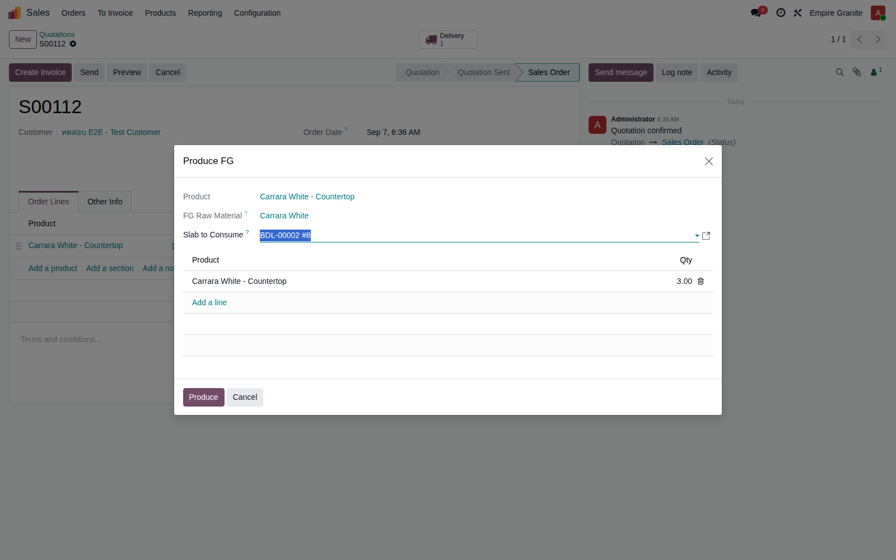 |
| TC-E2E-M5-07 | กรอกจำนวนผลผลิตจริงจาก Slab นี้ แล้วกดผลิต 1 Slab ตัดออกมาได้กี่ชิ้นไม่ตายตัว — ฝ่ายผลิตกรอกจำนวนจริงที่ตัดได้ตอนนี้เอง ไม่ต้องเท่ากับจำนวนที่ลูกค้าสั่งพอดี (ตัดเผื่อสต็อกไว้ขายออเดอร์ถัดไปได้) |
ทำ TC-E2E-M5-06 เสร็จแล้ว |
|
จำนวนผลผลิต = 6 (ลูกค้าสั่งแค่ 3 — ตัดเผื่อสต็อกไว้ขายรอบหน้าด้วย) | เกิดใบสั่งผลิต (Manufacturing Order) ใหม่ ผูก Slab ที่เลือกเป็นวัตถุดิบ จำนวนที่ต้องผลิตตรงกับที่กรอก — ตัวอย่างจริง: EG01/STFG/00012 (To Produce 6.00) | High | 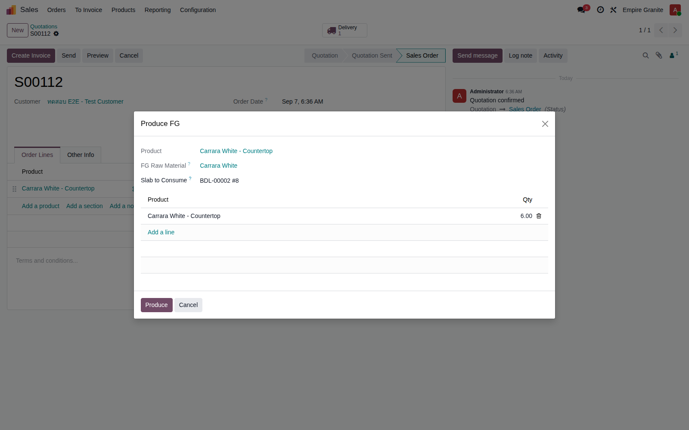 |
| TC-E2E-M5-08 | กด "Complete FG Production" — ปิดงานผลิต | ทำ TC-E2E-M5-07 เสร็จแล้ว |
|
- | ใบสั่งผลิตเปลี่ยนสถานะเป็น Done Slab ที่ใช้ถูกตัดออกจากสต็อกจนหมด (ใช้ครั้งเดียว ไม่เหลือให้ใช้ซ้ำ) FG เข้าสต็อกจริงตามจำนวนที่ผลิต พร้อม Lot ใหม่ — ตัวอย่างจริง: EG01/STFG/00012 ผลิตสำเร็จ 6.00/6.00 ได้ Lot "FG-EG01/STFG/00012" | High | 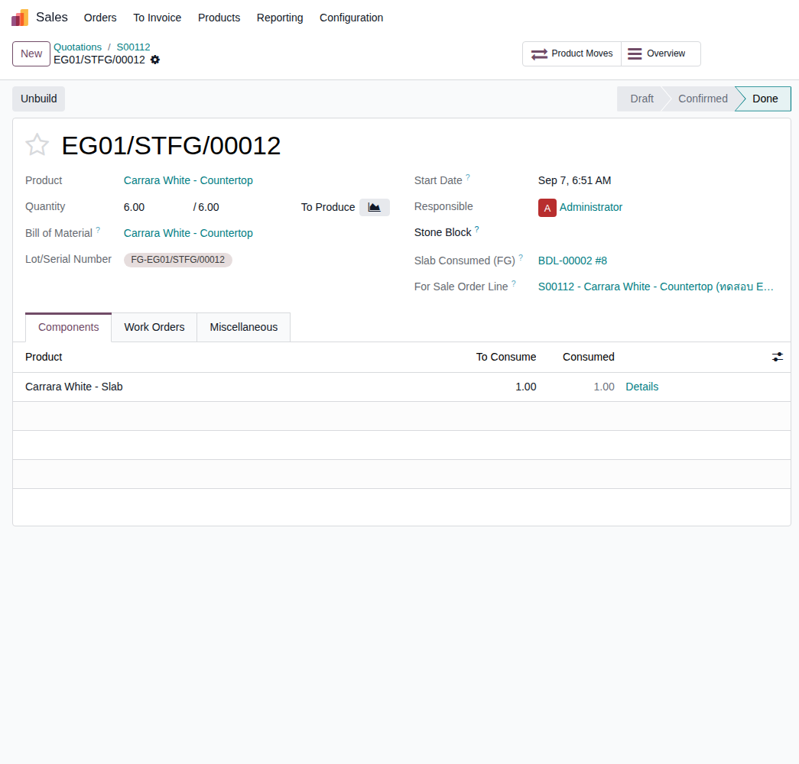 |
G3. จัดส่ง (Delivery)
ทั้ง 2 กรณี (ผลิตใหม่ / มีสต็อกอยู่แล้ว) ส่งมอบแบบเดียวกัน ไม่มีการดักสแกน Serial · 2 test cases
| TC ID | Scenario | Precondition | Steps | ข้อมูลตัวอย่าง | Expected Result | Priority | ภาพหน้าจอ |
|---|---|---|---|---|---|---|---|
| TC-E2E-M5-09 | ส่งมอบสินค้าที่เพิ่งผลิตเสร็จ (กรณี G2b) | ทำ TC-E2E-M5-08 เสร็จแล้ว มีใบส่งของอัตโนมัติรออยู่ตั้งแต่ตอน Confirm |
|
- | ใบส่งของเปลี่ยนสถานะเป็น Done — ไม่มีการดักสแกน Serial เหมือนสินค้า Block/Slab (ส่งได้ทันทีเมื่อสต็อกพร้อม) — ตัวอย่างจริง: EG01/OUT/00066 (Carrara White - Countertop 3.00/3.00 พร้อมส่ง) | High | 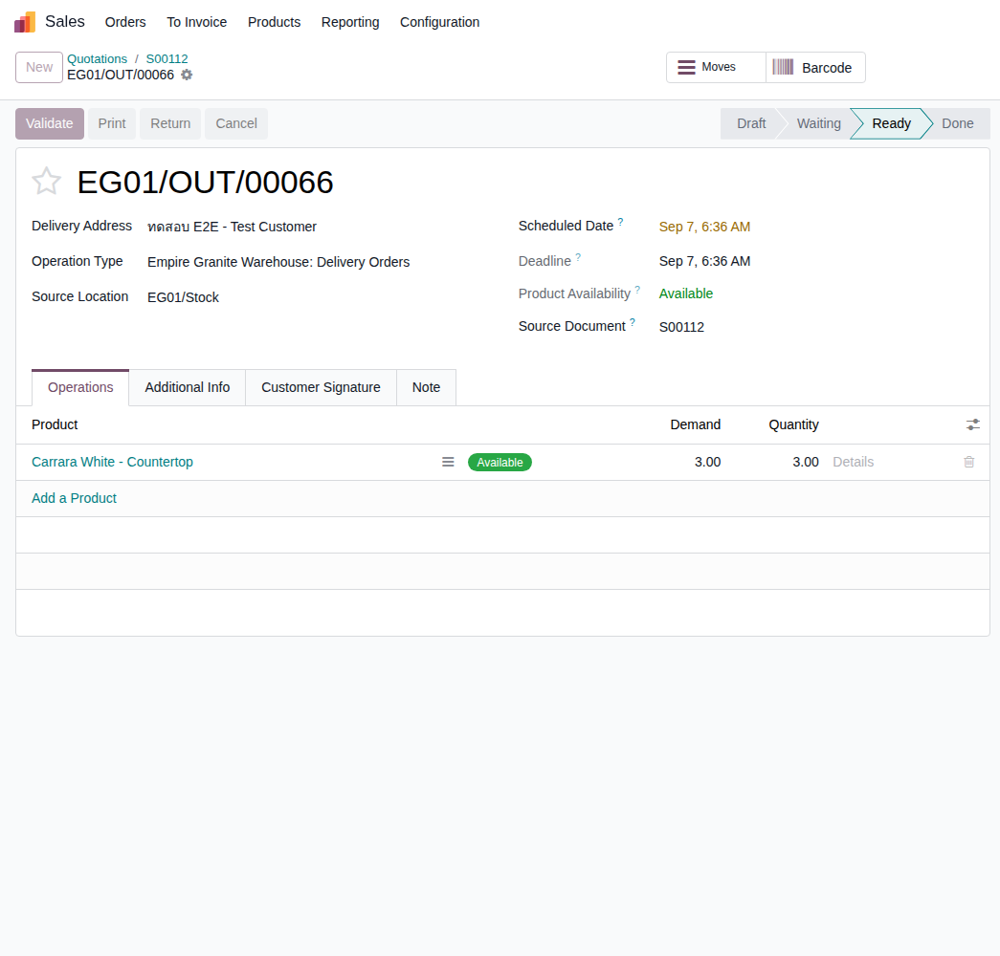 |
| TC-E2E-M5-10 | ส่งมอบสินค้าที่ไม่ต้องผลิต (กรณี G2a) | ทำ TC-E2E-M5-03 เสร็จแล้ว |
|
- | ใบส่งของเปลี่ยนสถานะเป็น Done ทันที ดึงสต็อกจาก FG ที่มีอยู่แล้วโดยไม่ผ่านขั้นตอนผลิตเลยสักครั้ง — ตัวอย่างจริง: EG01/OUT/00067 (Carrara White - Countertop 2.00/2.00) | Medium | 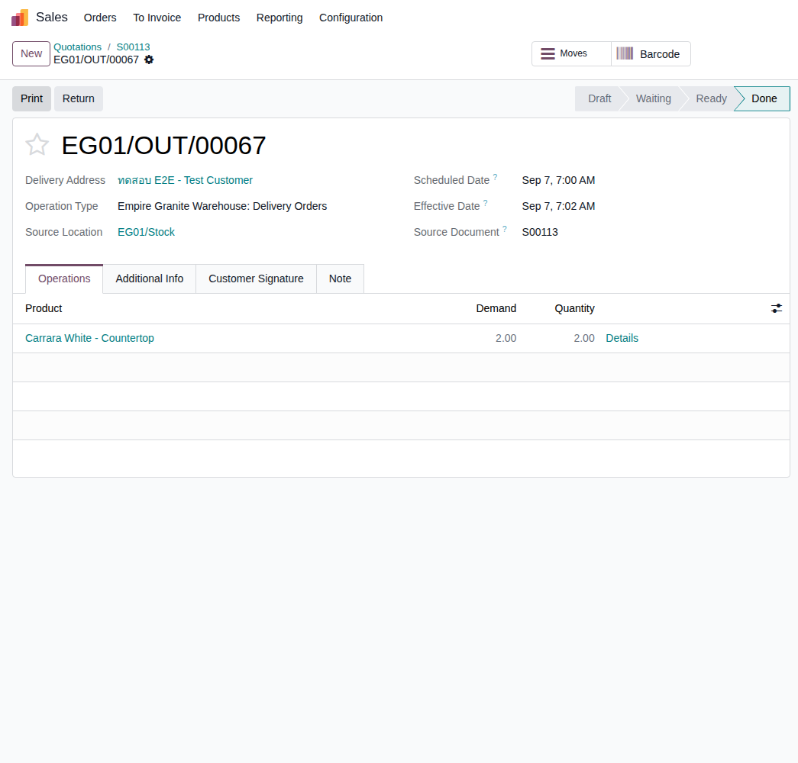 |
G4. บัญชี (Accounting)
ออกใบแจ้งหนี้ & ตรวจรายการบัญชี · 2 test cases
| TC ID | Scenario | Precondition | Steps | ข้อมูลตัวอย่าง | Expected Result | Priority | ภาพหน้าจอ |
|---|---|---|---|---|---|---|---|
| TC-E2E-M5-11 | ออกใบแจ้งหนี้และยืนยัน (Post) | ทำ TC-E2E-M5-09 เสร็จแล้ว |
|
- | ใบแจ้งหนี้สถานะ Posted ยอดตรงกับ SO เป๊ะ — ตัวอย่างจริง: INV/2026/00018 (48,150.00 บาท จาก S00112) | High | 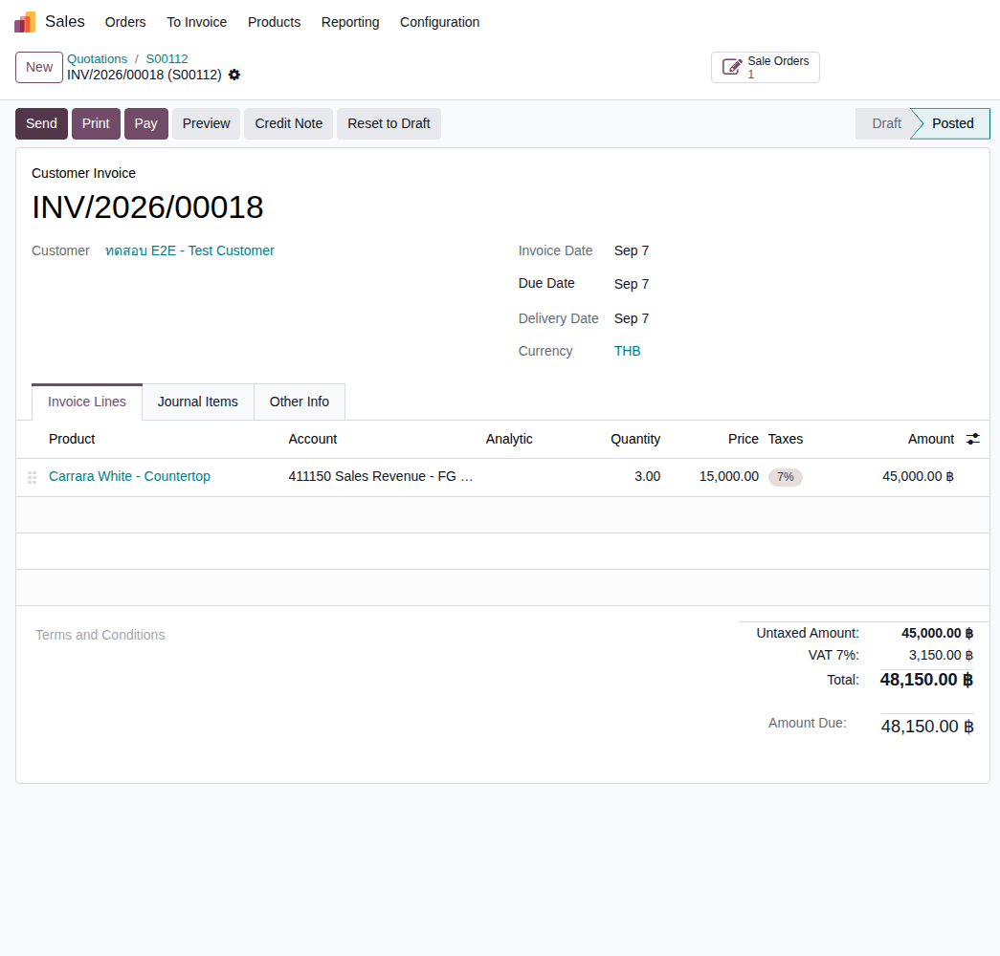 |
| TC-E2E-M5-12 | ตรวจรายการบัญชีของใบแจ้งหนี้ (Journal Items) — ยืนยันว่าลง COGS ถูกต้อง ℹ️ หมายเหตุ: ใบแจ้งหนี้ของ S00112/S00113 เองไม่มีรายการ COGS ขึ้นมา — ตอนแรกเข้าใจผิดว่าเป็นบั๊ก แต่ตรวจสอบลึกแล้วพบว่าไม่ใช่: หินที่ส่งมอบ 5 หน่วยในนั้นตรงกับสต็อกเก่าที่มีอยู่แล้ว 5 หน่วยพอดี ซึ่งเป็นข้อมูลสาธิตเก่าที่มีมูลค่าบันทึกไว้ 0.00 บาทตั้งแต่ต้น (ช่องว่างข้อมูลที่รู้และยอมรับไว้แล้วก่อนหน้านี้ ไม่ใช่ปัญหาใหม่) ระบบคิดต้นทุนแบบ FIFO จึงตัดจากของเก่า (มูลค่า 0) ก่อนของใหม่ที่เพิ่งผลิตถูกต้องแล้วตามหลัก FIFO — ไม่ใช่บั๊กของ Mode 5 เลย ดูตัวอย่างที่ยืนยันว่าระบบลงบัญชีถูกต้องจริงด้านล่าง (ใช้ของใหม่ล้วน ไม่ปนของเก่า) |
ทำ TC-E2E-M5-11 เสร็จแล้ว (ตัวอย่างนี้ใช้ SO/Invoice อีกใบที่ขายจาก FG ล็อตใหม่ล้วน เพื่อให้เห็นรายการ COGS จริง) |
|
- | เดบิต/เครดิตสมดุลกัน (รวมเท่ากันทั้ง 2 ฝั่ง) พร้อมมีรายการ COGS ปรากฏครบ — ตัวอย่างจริง: INV/2026/00020 (SO S00114, ขาย FG ล็อตใหม่ 2 หน่วย) เดบิต Trade Receivables 32,100.00 = เครดิต Sales Revenue - FG Production 30,000.00 + Output VAT 2,100.00 บาท และมีคู่ COGS แยกสมดุลกันเอง: เดบิต 511100 Cost of Goods Sold 933.33 = เครดิต 113150 Inventory - Stone FG 933.33 บาท (933.33 = 466.67 บาท/หน่วย × 2 หน่วย ตรงกับต้นทุน Slab จริงเป๊ะ) | Medium | 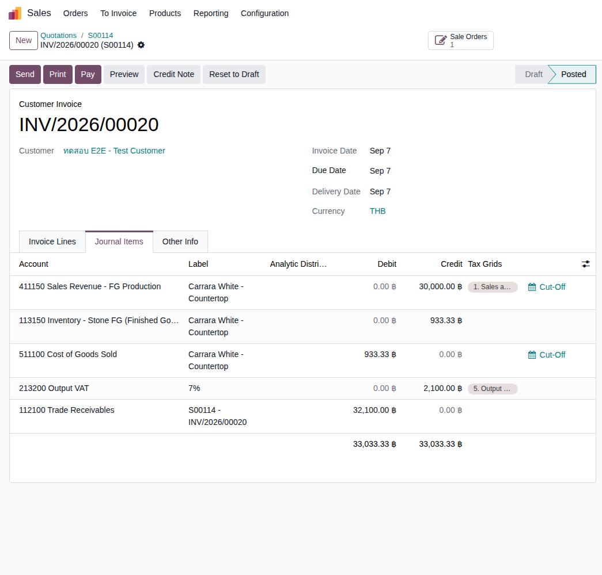 |